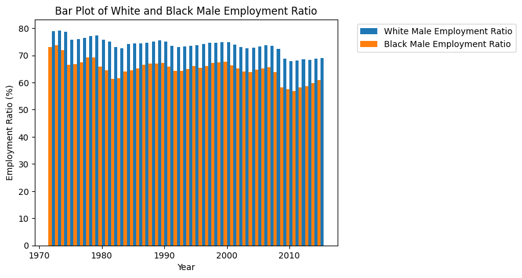
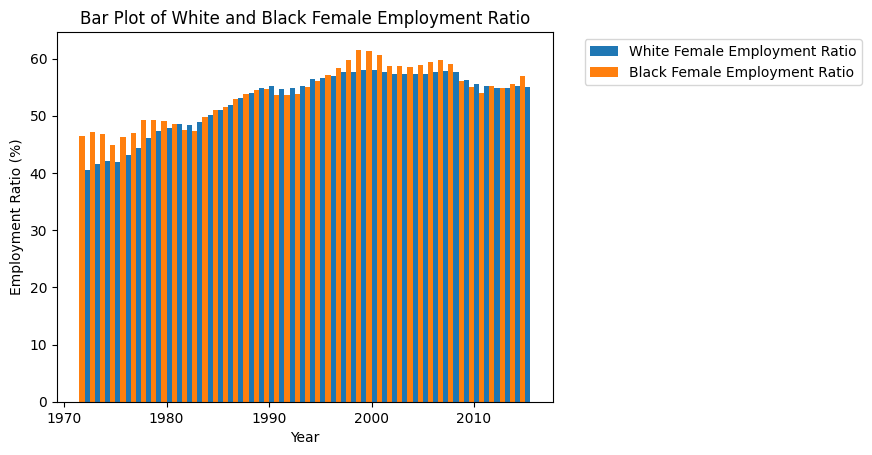
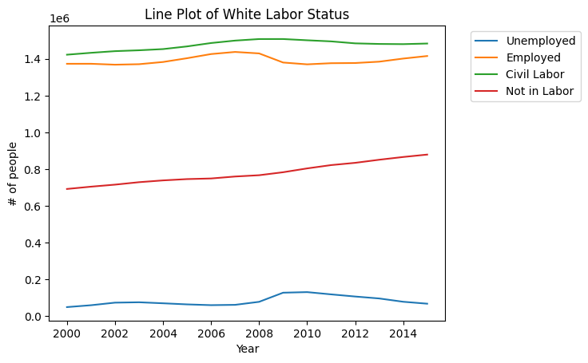
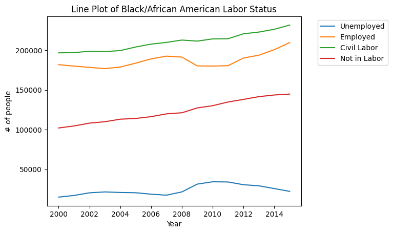
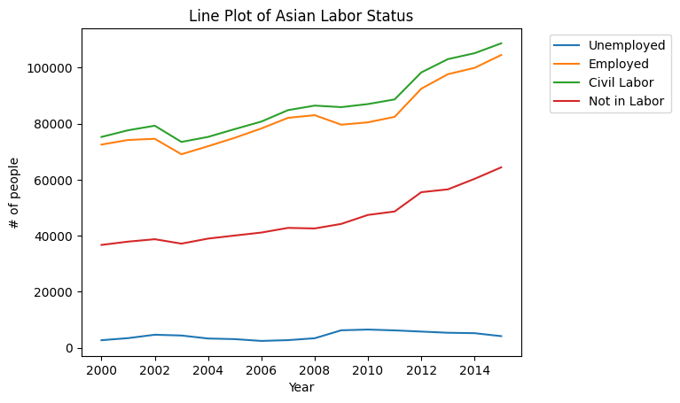
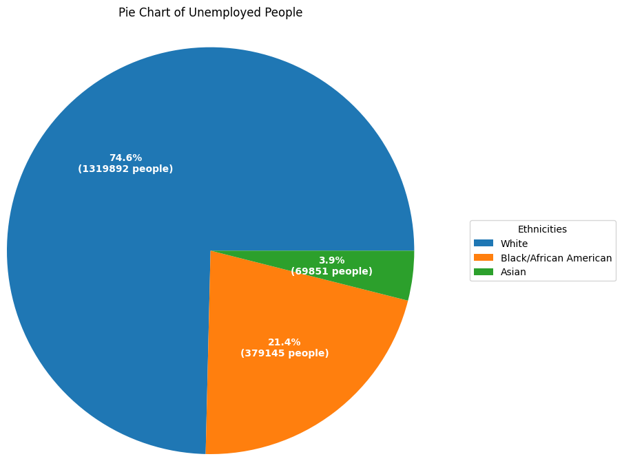
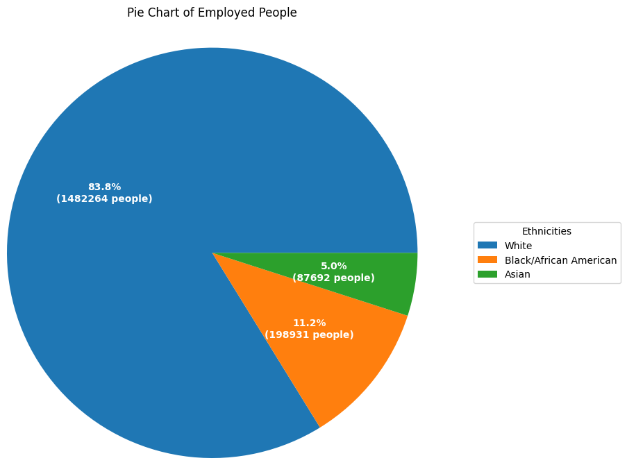

import requests
from bs4 import BeautifulSoup
import pandas as pd
import matplotlib.pyplot as plt
import numpy as npBy: Daniel Ko
Digital Humanities 140 Final Project
Professor: Benjamin Winjum
Introduction
Description
This analysis aims to look for patterns and/or correlations between labor status in the US (eg. employed, unemployed) and other factors such as ethnicity (eg. White, Black/African-American) and gender (male or female). These will be compared against each other to provide different insights into what may be related with each other. More specifically, the differences between different factors and categories will be explored. The primary libraries that will be used are pandas and matplotlib, although other libraries such as requests and BeautifulSoup were used to help with scraping the data.
Data Source
Labor Data from CORGIS (Up to 2015): https://corgis-edu.github.io/corgis/csv/labor/
Motivation
The primary motivation for analyzing this data is to see if there are any noticeable differences between groups of people when it comes to labor in the US. Employment (or rather, unemployment) is a very important part of people’s lives, and discovering if there are clear biases in “intrinsic factors” will make it easier to figure out why these biases exist. In other words, using objective analysis can make it easier for proper political discussion to lead the right direction and for the general public to understand what employment trends are.
Questions to Answer
- Are there major differences in employment between ethnicities in the US?
- Are men or women more likely to be employed in the US?
- Is there a specific combination of ethnicity and gender that is more likely to be employed or less likely to be employed?
- Which ethnicity has the highest number of people that are employed and unemployed?
Methods
Imports and Data Collection
def pdcorgis(a):
inputText = a.lower()
url = 'https://corgis-edu.github.io/corgis/csv/' + inputText + '/'
response = requests.get(url)
html_string = response.text
document = BeautifulSoup(html_string, "html.parser")
links = document.find_all('a')
for i in links:
if i.has_attr('download'):
hrefVar = i['href']
newURL = url + hrefVar
dataframe = pd.read_csv(newURL)
return dataframedf1 = pdcorgis('labor')Understanding the Data
Data stretches from 1972 to 2015 completely from month to month
The data is mostly complete for White and African American, but is noticeably missing everything before 2000 for Asians
Noticeable gap of “Not in Labor” for White between 1972 and 1976
Data is sectioned by status of employment, then ethnicity, then type of data (eg. count, rate, etc.)
Most data is of a float type, but some are strings or integers when relevant
Years and Months need to be enumerated in order to properly visualize trends
Comparison between male and female should be relatively straightforward since they are already separated
Rates and ratios are percentages, but are of the float type
Time.Month is mostly irrelevant, since Time.Month Name exists and is essentially the same thing
Results: Analytical Data Visualizations
#Data organization code for first visualization
white_empl_ratio_male = df1.groupby('Time.Year')['Data.Employed.White.Employment-Population Ratio.Men'].sum() / 12
black_empl_ratio_male = df1.groupby('Time.Year')['Data.Employed.Black or African American.Employment-Population Ratio.Men'].sum() / 12#Data organization code for second visualization
white_empl_ratio_female = df1.groupby('Time.Year')['Data.Employed.White.Employment-Population Ratio.Women'].sum() / 12
black_empl_ratio_female = df1.groupby('Time.Year')['Data.Employed.Black or African American.Employment-Population Ratio.Women'].sum() / 12#Data organization code for third visualization
white_unem_grouped = df1.loc[df1['Time.Year']>=2000].groupby('Time.Year')['Data.Unemployed.White.Counts.All'].sum()
white_emp = df1.loc[df1['Time.Year']>=2000].groupby('Time.Year')['Data.Employed.White.Counts.All'].sum()
white_civil = df1.loc[df1['Time.Year']>=2000].groupby('Time.Year')['Data.Civilian Labor Force.White.Counts.All'].sum()
white_notlabor = df1.loc[df1['Time.Year']>=2000].groupby('Time.Year')['Data.Not In Labor Force.White'].sum()
black_unem_grouped = df1.loc[df1['Time.Year']>=2000].groupby('Time.Year')['Data.Unemployed.Black or African American.Counts.All'].sum()
black_emp = df1.loc[df1['Time.Year']>=2000].groupby('Time.Year')['Data.Employed.Black or African American.Counts.All'].sum()
black_civil = df1.loc[df1['Time.Year']>=2000].groupby('Time.Year')['Data.Civilian Labor Force.Black or African American.Counts.All'].sum()
black_notlabor = df1.loc[df1['Time.Year']>=2000].groupby('Time.Year')['Data.Not In Labor Force.Black or African American'].sum()
asia_unem_grouped = df1.loc[df1['Time.Year']>=2000].groupby('Time.Year')['Data.Unemployed.Asian.Counts'].sum()
asia_emp = df1.loc[df1['Time.Year']>=2000].groupby('Time.Year')['Data.Employed.Asian.Counts'].sum()
asia_civil = df1.loc[df1['Time.Year']>=2000].groupby('Time.Year')['Data.Civilian Labor Force.Asian.Counts'].sum()
asia_notlabor = df1.loc[df1['Time.Year']>=2000].groupby('Time.Year')['Data.Not In Labor Force.Asian'].sum()
years2000 = df1.loc[df1['Time.Year']>=2000]
yearsgrouped2000 = years2000['Time.Year'].unique()
yearsgrouped = df1['Time.Year'].unique()#Data organization code for fourth visualization
total_unem = [white_unem_grouped.sum(), black_unem_grouped.sum(), asia_unem_grouped.sum()]
total_emp = [white_emp.sum(), black_emp.sum(), asia_emp.sum()]Given all of the conclusions from the exploratory data analysis, this is the data that was used to both organize and clean the data from the CORGIS csv file. The most notable point of the analysis is the emphasis on grouping the data by year and also working around having to sum the data. Since the data is given in months over the span of years, certain data like the employment ratio needs to be averaged in order to be presentable in a data visualization. In addition, the third visualization needs to consider all of the different types of labor and the data limitation of only data after 2000 being applicable for Asians.
Since the data is somewhat limited in giving a total population count, the analysis is relative as opposed to absolute. This is to better highlight the potential differences and remove the possibility of sheer numbers affecting the results. The decision to use the employment ratio for the gender analysis is also relevant to this data limitation.
First Visualization: Bar Plot of Employment Ratio for Males between White and Black (with respect to years)
width = 0.5
plt.bar(yearsgrouped+0.25, white_empl_ratio_male, width, label='White Male Employment Ratio')
plt.bar(yearsgrouped-0.25, black_empl_ratio_male, width, label='Black Male Employment Ratio')
plt.xlabel("Year")
plt.ylabel("Employment Ratio (%)")
plt.title("Bar Plot of White and Black Male Employment Ratio")
plt.legend(bbox_to_anchor=(1.05, 1.0))<matplotlib.legend.Legend at 0x7ff737b8f3d0>
The main takeaway from this bar plot is that the employment ratio of the White male population is higher than the Black male population. The difference between the two ethnicities ranges from ~5% to up to ~15%, with the average difference being ~10%. The primary years where the difference is the highest are 1980-1986 and 2005-2010. Generally speaking in statistics, a difference of 5% is considered statistically significant, and the employment ratio difference is consistently above that margin. As such, it is safe to say that this difference is in-fact statistically significant and is not down to random chance. Since the data is using the ratio instead of total # of men, it is also obvious that this data is relative to the total population of the ethnicity.
Second Visualization: Bar Plot of Employment Ratio for Females between White and Black (with respect to years)
width = 0.5
plt.bar(yearsgrouped+0.25, white_empl_ratio_female, width, label='White Female Employment Ratio')
plt.bar(yearsgrouped-0.25, black_empl_ratio_female, width, label='Black Female Employment Ratio')
plt.xlabel("Year")
plt.ylabel("Employment Ratio (%)")
plt.title("Bar Plot of White and Black Female Employment Ratio")
plt.legend(bbox_to_anchor=(1.05, 1.0))<matplotlib.legend.Legend at 0x7ff7357af820>
The main takeaway from this bar plot is that the employment ratio of the White female population is similar or slightly lower than the Black female population, although any differences between the two are not very much. The difference between the two ethnicities ranges from 1% to ~8%, with the average difference being ~5%. The primary years where the difference is the highest are 1972-1976 and 1996-2001. Generally speaking in statistics, a difference of 5% is considered statistically significant, and the employment ratio difference is consistently below that margin. As such, it is safe to say that this difference is in-fact not statistically significant and may be down to random chance. Since the data is using the ratio instead of total # of women, it is also obvious that this data is relative to the total population of the ethnicity.
Compared to the Employment Ratio Bar Plot for Males, the difference appears to be about 20% on average. This seems to denote the general idea that males are more likely to be employment in a given ethnicity compared to females, although there is still a significant number of females that are in employment.
Third Visualization(s): Line Plot of Unemployed, Employed, Civilian Labor Force, and Not in Labor for every race
fig, ax = plt.subplots()
ax.plot(yearsgrouped2000, white_unem_grouped, label='Unemployed')
ax.plot(yearsgrouped2000, white_emp, label='Employed')
ax.plot(yearsgrouped2000, white_civil, label='Civil Labor')
ax.plot(yearsgrouped2000, white_notlabor, label='Not in Labor')
ax.set_xlabel("Year")
ax.set_ylabel("# of people")
ax.set_title("Line Plot of White Labor Status")
ax.legend(bbox_to_anchor=(1.05, 1.0))<matplotlib.legend.Legend at 0x7ff735940c70>
The best way to interpret this plot is to look at the vertical differences between the different lines, since it is using the total count of people per year as opposed to a ratio. Notably, the difference between those in Employment and Civil Labor is very minimal, and the general difference between those not in Civil Labor and those that are Unemployed is reasonably high. There is also a notable dip in employment and jump in unemployment around 2008-2009, although the lines for those in Civil Labor and those not in Civil Labor remains mostly unchanged. There is a clear upwards trend of those not in Civil Labor throughout the years, although this may be related to population growth and differences in employment types (ie. the Information Age creating new types of jobs that are not counted as Civil Labor).
fig, ax = plt.subplots()
ax.plot(yearsgrouped2000, black_unem_grouped, label='Unemployed')
ax.plot(yearsgrouped2000, black_emp, label='Employed')
ax.plot(yearsgrouped2000, black_civil, label='Civil Labor')
ax.plot(yearsgrouped2000, black_notlabor, label='Not in Labor')
ax.set_xlabel("Year")
ax.set_ylabel("# of people")
ax.set_title("Line Plot of Black/African American Labor Status")
ax.legend(bbox_to_anchor=(1.05, 1.0))<matplotlib.legend.Legend at 0x7ff7352b7280>
Compared to the Line Plot of White Labor Status, the same trends that appeared before become even more obvious. Notably, the dip in employment and rise in employment around 2008 is much more pronounced in this graph compared to the Line Plot of White Labor Status. Also, the trend line for Civil Labor consistently rises as opposed to the general flatlining in the White line plot, which may be related to some other social or political event. Also, the gap between those in Civil Labor and in Employment is much larger compared to the White line plot, which denotes that there is a significant amount of Black/African American people in Civil Labor that are not under the same distinction as employment. In other words, it appears that there is a larger number of Black/African American people working Civil Labor jobs compared to White people.
fig, ax = plt.subplots()
ax.plot(yearsgrouped2000, asia_unem_grouped, label='Unemployed')
ax.plot(yearsgrouped2000, asia_emp, label='Employed')
ax.plot(yearsgrouped2000, asia_civil, label='Civil Labor')
ax.plot(yearsgrouped2000, asia_notlabor, label='Not in Labor')
ax.set_xlabel("Year")
ax.set_ylabel("# of people")
ax.set_title("Line Plot of Asian Labor Status")
ax.legend(bbox_to_anchor=(1.05, 1.0))<matplotlib.legend.Legend at 0x7ff73536aad0>
Many of the same trends from the White and Black/African American Labor Status plots remain the same here, although some of the differences are important to note. The biggest difference is that the trend line for Civil Labor and Employment has very consistently risen throughout the years, and is continuing to do so. In addition, these two lines are even closer together compared to both White and Black/African American populations, so it is safe to say that there are a notably small amount of Asians in Civil Labor jobs. The spike in those that are Not in Civil Labor also matches very consistently with the Employment and Civil Labor lines, which is different from the White and Black/African American trend lines.
Here are some of the conclusions that can be made from these line plots - Asians are least likely to be in Civil Labor jobs - Blacks/African Americans are most likely to be in Civil Labor jobs - The 2008 Housing Crisis and subsequent Recession hit the Black/African American population the hardest, while the Asian population was affected by it the least. - Generally speaking, the number of those in employment for the White population has stayed consistent, while the number for the Black/African American population has risen slowly, and the number for the Asian population has risen significantly - Unemployment for every ethnicity is around the same relatively speaking, and same goes for those Not in Civil Labor.
Fourth Visualization: Pie Chart of all unemployed people and employed people
def func(pct, allvals):
absolute = int(np.round(pct/100.*np.sum(allvals)))
return f"{pct:.1f}%\n({absolute:d} people)"
legend_names = ["White", "Black/African American", "Asian"]
fig, ax = plt.subplots()
wedges, texts, autotexts = ax.pie(total_unem, radius=2, autopct=lambda pct: func(pct, total_unem), textprops=dict(color="w"))
ax.legend(wedges, legend_names, title="Ethnicities", loc="center left", bbox_to_anchor=(1.5, 0, 0.5, 1))
plt.setp(autotexts, size=10, weight="bold")
ax.set_title("Pie Chart of Unemployed People", y=1.4)
plt.show()
Admittedly, this plot does not say very much on its own, since it is heavily affected by the sheer number of White people in the data compared to the Black/African American and Asian populations. This is best compared to the pie chart of those that are employed, since we can have a better grasp of the potential differences.
def func(pct, allvals):
absolute = int(np.round(pct/100.*np.sum(allvals)))
return f"{pct:.1f}%\n({absolute:d} people)"
legend_names = ["White", "Black/African American", "Asian"]
fig, ax = plt.subplots()
wedges, texts, autotexts = ax.pie(total_emp, radius=2, autopct=lambda pct: func(pct, total_unem), textprops=dict(color="w"))
ax.legend(wedges, legend_names, title="Ethnicities", loc="center left", bbox_to_anchor=(1.5, 0, 0.5, 1))
plt.setp(autotexts, size=10, weight="bold")
ax.set_title("Pie Chart of Employed People", y=1.4)
plt.show()
With this chart and comparing it to the previous pie chart, it is evident that there is a clear difference between the White and Black/African American population when it comes to labor status. Notably, the percentage difference is around 10% when comparing the percentage difference of how many Black/African American people are employed versus those that are unemployed. The percentage for the Asian population is mostly unchanged.
Although this data visualization is not very comprehensive and requires much more specific data analysis to be fully conclusive, the one major takeaway is that there is a significant amount of Black/African-Americans that are unemployed compared to those that are employed, and that the White population has made up much of that difference. It is hard to concretely conclude why this is the case, but the difference between the two is non-negligible.
Further analysis through methods such as separating by year for each pie chart and looking the Civil Labor populations can reveal more into why this difference is so apparent, as well as potential changes over the years. Additionally, data featuring other ethnicities may help to clarify the true ratio between the ethnicities in regards to labor status.
Conclusion
Overall, the analysis has been successful to a degree in answering the research questions that were posed in the beginning of the project. Although specific factors behind these answers is difficult to concretely say, it is evident that there are at least differences. I do believe some of the data could be represented better or cleaned in a different way, but I do feel that the current results provide a general picture of the state of labor status in the US. If the data was a little bit more expansive, or did not miss data from before 2000 for Asians, I do believe some of the visualizations would be more concrete (eg. the line plots).
An important fact about this data is that it only goes up to 2015, which means that it completely misses the 2020 COVID-19 pandemic. Although I do not have numbers for that data, it is absolutely obvious that the pandemic must have had a varying effect depending on gender and ethnicity, especially since the differences are already clear here. The COVID-19 pandemic affected everyone, but I would have liked to analyze the data both during and after the COVID-19 pandemic (ie. up to the present year of 2023).
I believe that this type of analysis can be very heavily expanded upon, although the extent of what’s possible may be limited to the data that exists. If I had to do this analysis again, I would attempt to provide even more specific plots and try to gather data with more than just White, Black/African American, and Asian.
The sections below will be conclusions regarding the specific research questions.
- Are there major differences in employment between ethnicities in the US?
Yes, absolutely. However, the major differences are primarily between a higher number/ratio of those in employment for the White population, and a lower number/ratio of those in employment for the Black/African American population. Notably, the Asian population is steadily rising and the numbers trend toward it continuing to grow over time. If the data reached all the way up to the present day (2023), it is safe to conclude that the Asian population would be getting closer to the White population. Although it is hard to say exactly why there are differences, the differences became smaller as the years continued and the trend appears to show that it would have continued to do so to the present day.
- Are men or women more likely to be employed in the US?
Men are more likely to be employed in the US. Although the numbers are generally decreasing for men and increasing for women, the general difference appears to be around 20% between male and female. The male employment ratio went from around 80% to 70% from 1972 to 2015, and the female employment ratio went from around 50% to 60% from 1972 to 2015. As such, it is generally safe to say that the difference is significant enough to raise questions for further analysis. However, the data is limited in the scope of gender and labor status, so further data scraping would be required to objectively extend the analysis beyong this point. General reasons for this difference in employment may simply come down to changing societal standards for both males and females. However, this can be clarified if types of labor are analyzed more heavily.
Side note: There did not appear to be a major difference between White and Black/African American female employment, but there was a major difference between White and Black/African American male employment.
- Is there a specific combination of ethnicity and gender that is more likely to be employed or less likely to be employed?
From the data analysis, it appears that being White and male is the combination that is most likely to be employed, and conversely, being Black/African American and female is the combination that is least likely to be employed. This conclusion is gathered from compounding the analysis between the male and female, as well as the ethnicity analysis, although the first and second data visualizations are enough to answer this point without much further insight.
Notably, this is a hard question to concretely answer since it relies so heavily on other factors that cannot be objectively analyzed. However, the general trends of the given data appear to reflect the same conclusions and it is possible that as a collective narrative, these conclusions are correct regardless of the reasons why.
- Which ethnicity has the highest number of people that are employed and unemployed?
Although this question was not as thoroughly answered, the basic and rudimentary conclusion is that the White population has the highest number of people that are employed and unemployed based off of objective numbers. However, relatively speaking, the ethnicity with the highest ratio of employment is Asians followed very shortly by White people. Conversely, the ethnicity with the lowest ratio of employment is Black/African Americans. The best example of this is the fourth data visualizations (ie. the pie charts), although these same conclusions can be somewhat extrapolated from the third data visualizations (ie. the line plots).
Further analysis needs to be done in order to concretely anwer this question, and including other ethnicities may be required to fully answer it.